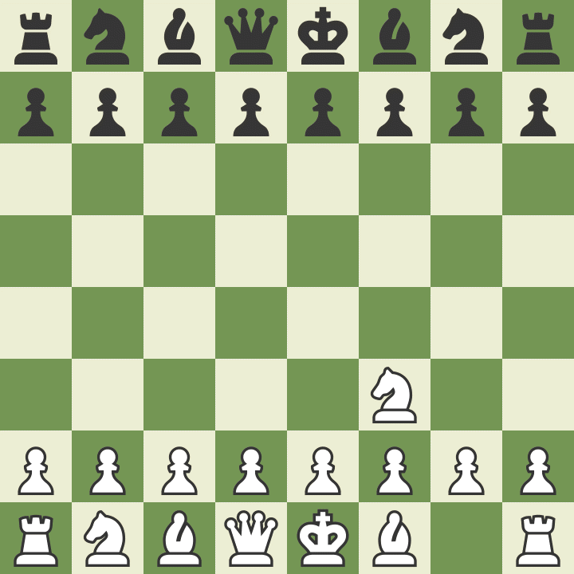
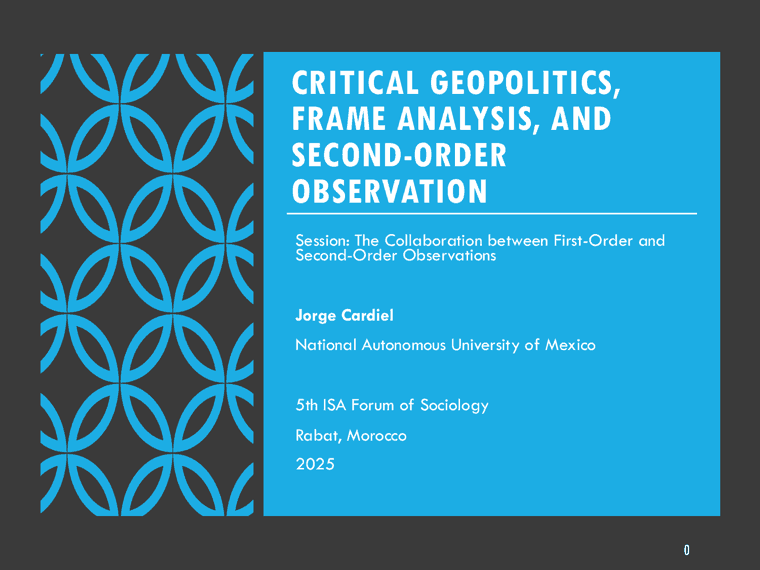

¿Cómo te llamas y qué estudias?
Nombre, carrera, semestre. Y si trabajas o haces prácticas, dilo.
Ej. «Soy Ana, Negocios Internacionales, quinto semestre, hago prácticas en logística.»Semestre 2027-1 · Grupo 1541 · Licenciatura en Negocios Internacionales
Geopolítica Internacional Aplicada a los Negocios Internacionales

La posición nunca es neutral. Cada movimiento cambia las opciones de los demás —y las tuyas.
Sesión 01 · Martes 18 de agosto · Salón A-004
Antes de explicar el mundo, conviene saber desde dónde lo estamos mirando. Hoy nos conocemos: cada quien arma su propia brújula geopolítica —lo que te interesa, lo que sigues, de dónde sacas tu información y a dónde quieres llegar— y con todas ellas trazamos el mapa del grupo.
🧭 45—60 min Todo el grupo Sin preparación previa
Norte · Identidad
¿Cómo te llamas y qué estudias?
Tu nombre, tu carrera y el semestre en el que vas. Si ya trabajas o haces prácticas, cuéntalo: eso también orienta tu mirada.
Lo que vas a decir en voz alta
Ninguna respuesta es demasiado sencilla. Contesta con lo que de verdad te pasa por la cabeza, no con lo que suene académico.
Nombre, carrera, semestre. Y si trabajas o haces prácticas, dilo.
Ej. «Soy Ana, Negocios Internacionales, quinto semestre, hago prácticas en logística.»Aficiones, series, libros, música, deportes, videojuegos. Sirve para conocernos y para saber por dónde te llega el mundo.
Ej. senderismo · anime · fútbol · cocina · producción musicalUn tema, no cinco. Lo que te da curiosidad, coraje o preocupación.
Ej. aranceles · migración · chips · agua · cárteles · IA · minerales críticosPuede ser por familia, por trabajo, por viaje o por pura fascinación.
Ej. China · Estados Unidos · Unión Europea · Medio Oriente · Sudamérica · el sur de MéxicoUna habilidad concreta. Es la que vamos a entrenar contigo durante el semestre.
Ej. argumentar · escribir un memo · leer noticias con criterio · detectar sesgos · sustentar una decisiónNo necesitas el enlace ni la fecha exacta. Basta con algo que hayas visto, leído o escuchado y que se te haya quedado pegado. Al contarla, intenta responder cuatro cosas:
No se trata de demostrar que ya dominas el tema, sino de mostrar por dónde entras.
Una noticia de TikTok cuenta aquí igual que una del Financial Times. Lo que vamos a discutir es precisamente eso: qué te llega, cómo te llega y qué se queda fuera.
Si de plano no traes ninguna noticia, cuenta la última conversación sobre el mundo que hayas tenido con alguien de tu familia. También sirve.
El primer concepto del curso
Conforme vayan saliendo las noticias, vamos a ir clasificándolas. No para etiquetar, sino para que veas que un mismo suceso cambia de forma según el lente que le pongas.
Mira el tablero: quién tiene qué y dónde.
Mira quién cuenta la historia y a quién le conviene.
Cómo transcurre
Nadie pasa al frente ni expone solo. Se habla desde el lugar, en ronda, y cada intervención dura poco.
Sin diapositivas Sin equipos Sin entregable
Comparte primero su propia brújula: qué le preocupa hoy, con qué lente trabaja y qué espera de este grupo.
Cada quien responde las cinco preguntas. Breve: alrededor de un minuto por persona.
Cuentas la noticia que traes y entre todos identificamos actores, lo que está en juego y qué lente predomina.
Cerramos agrupando lo que salió: temas dominantes, regiones y lentes. Ese mapa se queda como referencia y volveremos a él durante el semestre.
Herramienta
Escribe aquí tus respuestas y tendrás tu brújula lista para leerla en clase. Se guarda solo en este dispositivo: nadie más la ve, y puedes copiarla o imprimirla cuando quieras.
Geopolítica Internacional · FCA UNAM · Grupo 1541
Ya está lista
Las brújulas que subieron al foro, puestas una encima de otra: lo que nos mueve, dónde lo miramos, de dónde sacamos lo que sabemos y a dónde queremos llegar. Búscate adentro.
Elige una noticia internacional reciente y escribe seis líneas, una por punto:
Formato libre: documento, correo o notas del celular. Lo importante es llegar con eso escrito.
Al final de la sesión
Sabemos quién sigue qué, quién viene de dónde y con quién conviene trabajar en las actividades por equipo.
Los temas y regiones que salgan hoy se vuelven ejemplos recurrentes durante el semestre.
La distinción entre geopolítica clásica y crítica, aplicada ya a casos reales traídos por el grupo.
Por si te trabas
Si en la ronda no sabes por dónde empezar, toma cualquiera de estas y responde esa. Todas llevan al mismo lugar.
Prensa, TikTok, X, pódcast, YouTube, conversaciones familiares. ¿Cómo crees que eso moldea tu manera de ver el mundo?
Poder, guerra, petróleo, mapas, China, imperialismo, fronteras, narrativa. La primera que se te venga.
Territorio, finanzas, datos, energía o cultura. Elige uno y defiéndelo en una frase.
Algún país o zona que te intriga pero que sientes que se te escapa.
¿Cuál es tu punto ciego?
¿Qué tipo de análisis geopolítico te gustaría poder poner sobre la mesa en una junta?
Material de clase
La usamos el jueves 20 y seguimos con ella el jueves 27. Son tres instrumentos para dejar de preguntar solo qué pasa en el mundo y empezar a preguntar quién lo está describiendo así, y a quién le sirve esa descripción.

La presenté en el 5º Foro de Sociología de la ISA, en Rabat, en 2025. Está en inglés, pero la recorremos juntos en clase: llévala abierta en el celular o imprímela si prefieres subrayar.
El marco, en acción
Said desarma el repertorio de imágenes con el que la prensa occidental habla del mundo árabe y musulmán, y muestra cómo ese repertorio termina decidiendo de antemano qué significa cada noticia de la región.
Míralo con las tres herramientas en la mano: quién aparece hablando y quién aparece solo como imagen de fondo, qué palabra se usa para nombrar el mismo hecho, y qué preguntas nunca se hacen.
Bitácora del curso
Lo que hemos trabajado hasta hoy, en orden.
Ruta del semestre
Del vocabulario básico para leer el poder hasta la posición concreta de México en el tablero internacional.
18—25 agosto
Qué es la geopolítica, qué mira y qué deja fuera. Escalas, actores y marcos.
6 horas · 3 sesiones
27 ago — 3 septiembre
Imperio, guerra total e infraestructuras que todavía condicionan el comercio de hoy.
6 horas · 3 sesiones
8—24 septiembre
Estados Unidos y China, la guerra de los chips y la fragmentación del comercio mundial.
10 horas · 5 sesiones
29 sep — 13 octubre
Energía, minerales críticos, cuellos de botella marítimos y cadenas globales de valor.
10 horas · 5 sesiones
15 oct — 12 noviembre
Del análisis a la decisión: policy memo, matriz de riesgo y simulación de sala de consejo.
18 horas · 9 sesiones
17 nov — 3 diciembre
T-MEC, nearshoring, corredores logísticos y el margen de maniobra entre dos potencias.
12 horas · 6 sesiones
Sin clase el martes 15 de septiembre: día de asueto.
Cómo se califica
El 60 % de tu calificación se juega en el día a día: en los controles de lectura y en lo que aportas cada clase.
Se suma a tu calificación final. Puedes obtener uno de los dos medios puntos, o los dos.
Quién imparte el curso
Doctor en Ciencias Políticas y Sociales por la UNAM. Doy clases en la Facultad de Contaduría y Administración y en la Facultad de Ciencias Políticas y Sociales, en cursos sobre geopolítica, globalización, energía y mercados emergentes.
Trabajo desde la sociocibernética y la geopolítica crítica. Me interesa menos que memorices mapas y más que entiendas cómo se construyen las explicaciones sobre el mundo: quién las produce, con qué datos y a quién le sirven. Esa es la herramienta que quiero que se lleven de este curso.
Fuera del aula soy tesorero del Research Committee 51 (Sociocibernética) de la Asociación Internacional de Sociología y editor del Journal of Sociocybernetics.
Ese es el correo del curso: úsalo para dudas, entregas y avisos. Escribe desde donde quieras, pero pon tu nombre y el grupo en el asunto.
Recursos